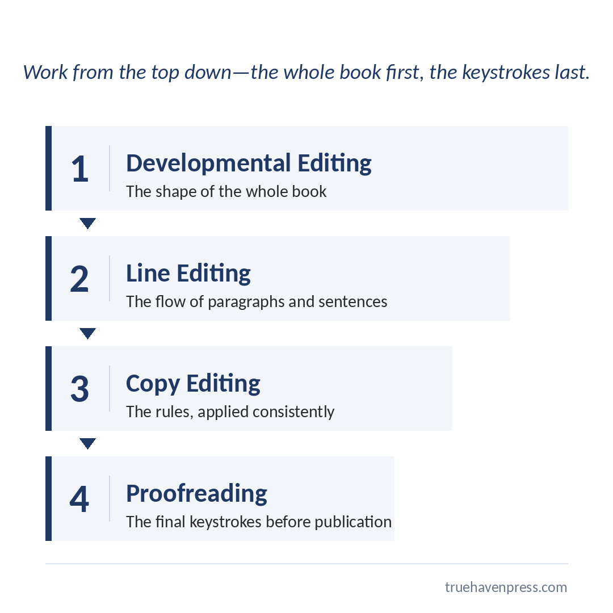

Insights
Read between the lines about the craft and business of books. Practical, honest articles on writing, editing, design, publishing, and marketing for authors who want the real story.
Understood, Not Overwritten: What a Good Editor Really Does for Your Book
You’re the one person who can’t read your own book the way a reader will. Here’s what an editor actually does and why every writer needs one.
What Writer’s Block Is Trying to Tell You
You write with two minds: the disciplined Architect and the wild Creative Monster. Writer’s block is a signal that one of them is unhappy.
Do You Speak Metadata? The Language That Gets Your Book Found
Metadata is the language that decides whether readers ever find your book. Without it, even the best-written books go unread.
Book Cover Design That Stops the Scroll
Your book cover has one job: stop the right reader, in about a second, at the size of a postage stamp.
How To Get Your Self-Published Book Into Bookstores (And What It Really Costs You)
Bookstores are opening at record pace. Here’s what it actually takes to get a self-published book on the shelf, and what it costs you.
What “You Keep Your Rights and Royalties” Actually Means
“You keep your rights and royalties” is one of publishing’s most repeated promises. Here’s how to tell a meaningful commitment from an empty one.

Book Editing Stages Explained: Stop Guessing What Your Manuscript Needs
Developmental, line, copy, proofreading—the four book editing stages, the order they belong in, and how to find out free which one your book needs.
Hybrid, Traditional, or Self-Publishing? How to Pick Your Path and Spot a Vanity Press in Disguise
Traditional, hybrid, or self-publishing—an honest look at every publishing path: real costs, real trade-offs, and how to spot a vanity press before you sign.